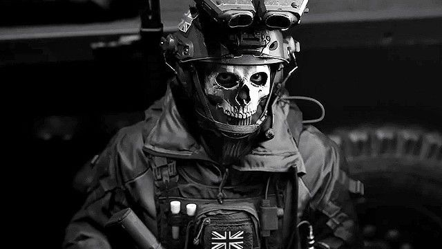
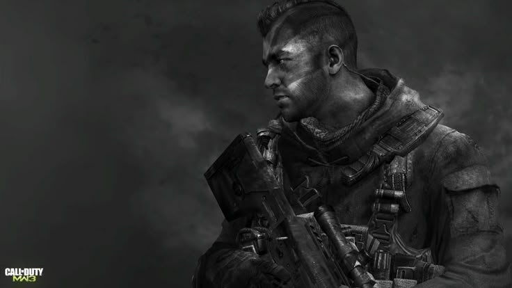
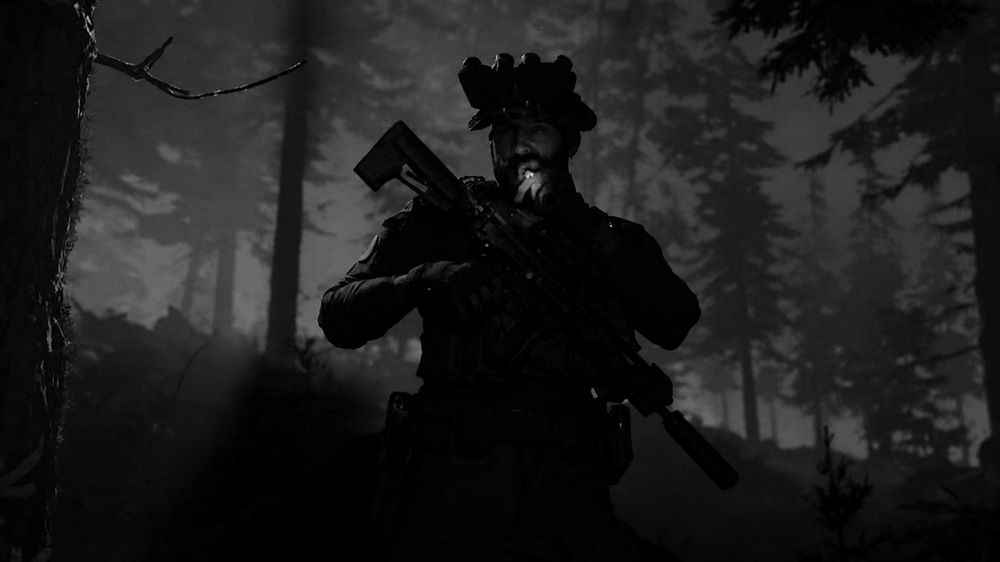
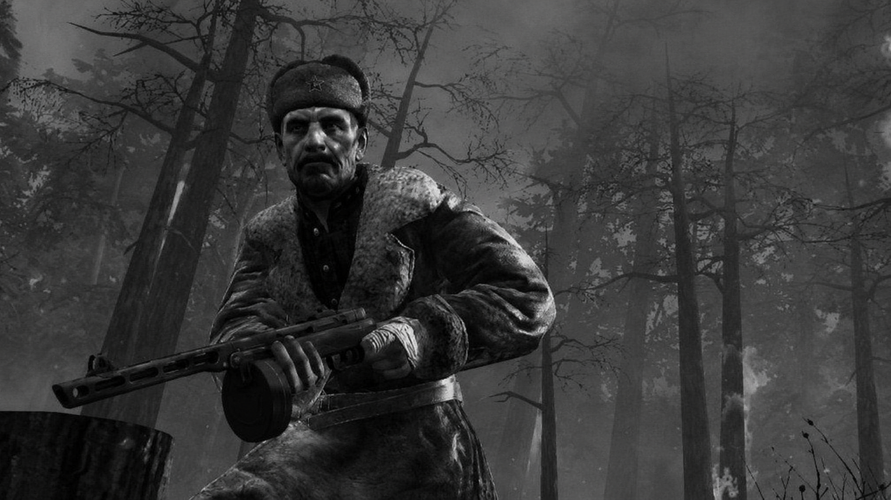
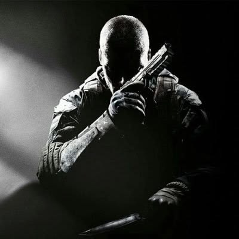
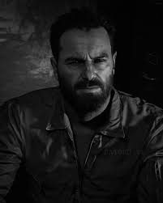

Conheça os personagens mais marcantes da franquia Call of Duty.

Poucos soldados possuem uma reputação tão intimidadora quanto Ghost. Integrante da Task Force 141, ele é especialista em infiltração, reconhecimento e operações de alto risco. A famosa máscara de caveira se tornou um símbolo de sua personalidade fria e reservada. Mesmo falando pouco, sua lealdade à equipe e sua eficiência em combate o transformaram em um dos personagens mais populares da franquia.

John "Soap" MacTavish começou sua trajetória como um jovem recruta das forças especiais britânicas e rapidamente se destacou por sua coragem e habilidade em combate. Ao lado de Price, participou de operações decisivas que impediram conflitos em escala global. Seu espírito de equipe e sua disposição para enfrentar qualquer missão fizeram dele uma lenda dentro da Task Force 141.

Veterano das forças especiais britânicas, Price é o líder que mantém a calma quando tudo está desmoronando. Ao longo dos anos, comandou operações contra terroristas, criminosos de guerra e organizações capazes de ameaçar o mundo inteiro. Sua experiência, senso de dever e capacidade de tomar decisões sob pressão fizeram dele um dos personagens mais respeitados de Call of Duty.

Reznov foi um soldado soviético que lutou na Segunda Guerra Mundial e testemunhou algumas das batalhas mais brutais do conflito. Marcado pela traição de antigos aliados, dedicou sua vida à busca por justiça e vingança. Sua determinação, seus discursos memoráveis e sua influência sobre Alex Mason fizeram dele uma das figuras mais marcantes da saga Black Ops.

Agente da CIA durante a Guerra Fria, Mason participou de missões secretas em diferentes partes do mundo. Após ser capturado e submetido a experimentos de lavagem cerebral, passou a questionar a própria realidade enquanto tentava impedir uma grande ameaça internacional. Sua história mistura espionagem, conspirações e alguns dos momentos mais icônicos de Call of Duty.

Frank Woods é a definição de resistência. Combatente experiente e parceiro de confiança de Mason, participou de operações clandestinas extremamente perigosas durante a Guerra Fria. Conhecido por sua personalidade explosiva e pela determinação inabalável, Woods sobreviveu a situações que teriam derrotado qualquer outro soldado, tornando-se um dos personagens mais lendários da série Black Ops.